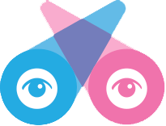

FOSS & MOZILLA
MozKIIMS - Cuttack
March 10, 2014
FOSS - Introduction
Free and Open Source Software
Free : Freedom - not-necessarily Price
Free Software <=> Open Source Software
BackTrack
1970 : No restrictions on software
1983 : Richard Stallman founded GNU Project
(Sept. 27)
1991 : Linus Torvalds releases Linux
1998 : Netscape created Mozilla opening up the source code of Netscape Navigator (Feb. 23)
Free vs. Open Source
Free Software is concerned with user's FREEDOM =>
- To run the code
- To Study the code
- To change the code to do what you want
- To redistribute
- To improve the software
- To release your improved builds
Open Source Software Features =>
- Code Shareability
- More enterprise-friendly
FOSS To Be Used
A great educational tool for you students
Let us try including it to our course curriculum
Mozilla A to Z
Netscape Navigator- a combination of Mosaic and Godzilla
AOL : Netscape's parent company
AOL reduced spending on Mozilla
2003 : Mozilla Foundation was launched
Mozilla Corporation is tax-paying subsidiary of Foundation
Mozilla Manifesto
Community Based
Collaborative activities
Building world class open source software
Web is a public resource for Innovation and Opportunity where we can build our dreams
web is an asset of the people and power of web to be in peoples hand
Develop an Open Web
Mozilla Projects
- Firefox for Desktop
- Firefox for Android
- Thunderbird
- Webmaker
- MDN
- Camino (not being developed now)
- Open Badges
- Persona
- Firefox OS
Firefox Browser
A New version of firefox every 6 weeks on Tuesdays
Latest Release : Firefox 27
Firefox Nightly
Firefox Australis
Written in C,C++,JavaScript, CSS, XUL(XML User Interface language),XBL(XML Binding Language)
Available in 79 languages
Mozilla Persona
Persona
A login system for the web
Eliminates site-specific passwords
Your mail for sign-in
Profile in the Cloud
User Privacy - primary goal
Persona For Users
Persona For Developers
Persona For Identity Providers
MDN
Mozilla Developer Network
developer.mozilla.org
OpenBadges
Get recognition for skills you learn anywhere
An online standard to recognize and verify learning
OpenBadges Anatomy
- Badge Name
- Description
- Criteria
- Issuer
- Evidence
- Date Issued
- Standards
- Tags
Mozilla Webmaker
Mozillians are people who make things.
Moving people from consumption to creation is Mozilla's goal
Mozilla has an opportunity to build the next generation of web makers
A new way for Mozilla to work: teaching and building things with ‘web makers’
Mozilla Webmaker : A quick way to make, remix or tweak a webpage or video while learning how the web works.
Mozilla Webmaker
- You don’t have to be a professional coder or wizard to be a webmaker
- You shouldn’t have be be a professional web developer to understand how the web works
- Mozilla want to help you level up your skills and go further
Webmaker Tools
- X-Ray Goggles
- Thimble
- Popcorn Maker
X-Ray Goggles

https://goggles.webmaker.org/
http://hackasaurus.org/en-US/goggles/
Firefox OS
Bringing the Open Web to Mobile
Devices OS
Developers need to re-write their apps for different platforms
Users need to re-purchase apps for different platforms
Developers' Freedom
Using HTML5 and the new Mozilla-proposed standard APIs, developers everywhere will be able to create amazing experiences and apps.
Developers will no longer need to learn and develop against platform-specific native APIs.
Consumers' Freedom
Consumers who use devices based on the Open Web
platform will be able to easily access and download their
own content regardless of which OS they use
OEMs' and Operators' Freedom
OEMs and operators will be able to provide
content and services across their entire
device portfolio,
regardless of OS.
And they will be able to customize user
experiences, manage app distribution and
retain customer
attention, loyalty and billing
relationships.
And they will be able to customize user
experiences, manage app distribution and
retain customer
attention, loyalty and billing
relationships.
Open Standard
Architecture
GONK
- Lower level Operating System
- Linux Kernel + HAL(Hardware Abstraction Layer)
GECKO
- Application Runtime
- Same as Rendering Engine in Firefox
- Implements a number of APIs
GAIA
- User Interface
- Build entirely on HTML5 and Open Web APIs
DEVTOOLS
Who Are Mozillians
People who volunteer their time to advance the Mozilla mission
They work on promoting openness, innovation and opportunity on the Web.
They form the core of the Mozilla community.
People who USE Mozilla Products.
Get Involved
tinyurl.com/mozkiims
Queries?
QUIZ
When was the first version of Firefox launched?
WHO?